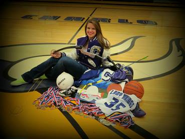
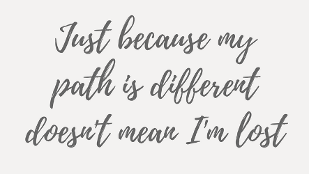

All my life I have abided by this plan. A plan involving a series of life goals to be completed in a particular order at a particular time with little variation. I am very much a perfectionist – refusing to accept any standard short of perfection and breaking at the seams when things stray out of my control. It is something that I found little fault in until I realized that it was actually getting in the way.
I grew up in Charlo, MT, a small town about an hour north of Missoula, MT. You can verify this with my parents, but I believe I got off to a good start - not getting into a lot of trouble growing up, smiling for pictures, and eating my fruits and veggies. Like most small-town kids, I was involved in a lot of school sanctioned activities. I stayed busy spiking volleyballs, dribbling basketballs, or leaping over hurdles after school. I was a part of several student groups aimed at developing various skills and helping the community – all while maintaining good grades. I had the support of my family, the tight-knit community, and all the hours invested into me by my teachers and coaches. When it came to my senior year of high school, I knew where and what I wanted to study before that notorious “last first day.” I was too proactive for my own good. I filled out as many scholarships that came my way to ensure I could afford my college education without taking out loans or burdening my parents. I received my high school diploma and was set to attend the University of Montana and study Marketing through the school of business administration in the Fall 2014.
Everything seemed to be going according to this meticulous plan I had my mind set on.
Although I know many non-traditionalists, adventurers, free spirts and the like that contest this idea entirely (and there is nothing wrong with that), I imagined my life following this ideal order in which I went to high school and graduated with good grades and big dreams for college. I would start college the following fall with an idea of what you wanted to study and make a career out of. I imagined meeting all kinds of people, growing as an individual, graduating 4+ years later, and stepping immediately into the ideal career the day after I receive my diploma. To date, my life has followed this plan. As I near the end of my college endeavors, I fully expected to make the later part regarding a career a reality.
Up until recently, I felt that I had to tailor my life to this rigid plan otherwise I wouldn’t succeed at getting where I want to be in my life. I would fail myself, my family, and everything that had gotten me to this point. I felt so constrained by this expectation I had put on myself to follow this plan exactly that the thought of not knowing exactly what I want to do with my life - let alone after college - was alarming. As you can imagine this was a HUGE obstacle in my plan. I assured myself that I would figure it out. I had to figure it out, but I was running out of time. Quickly the seams of my sanity pulled further and further apart with each passing day.
I finally realized that it didn’t have to be this way at the source of many great epiphanies - a long car ride.
It all bubbled to the surface after spending a much needed four-day weekend away from Missoula. On the ride home with my long-time boyfriend, we started talking about school and how we planned to turn our degrees into a career. As the conversation progressed, I realized that I don’t honestly know what I want to do with my life, and I probably won’t find my ideal job right after college.
The more I thought about it, the more ludicrous this expectation seemed to me. Not only did I come to terms with that fact that it’s okay to not know exactly what I want to do, but how could I possibly know what I want to do for the rest of my life? Why should I base the next 40-60+ years of my life on a mere 20 years of life experience and knowledge? I was fed up with the preconceived idea that I had to stick to the plan. I realized that it was unrealistic, and although it is a potentially suitable path, it is not the only path. I finally committed myself to being less of a perfectionist and letting life take its course.
I don’t know exactly what I want to do and that’s okay – but I’m not going to stop trying to figure it out. I want to be honest with myself and let go of the things I can’t control. I want to search for opportunities to grow and become more of the person I want to be - whether that be job opportunities, painting, internships, traveling, volunteer opportunities, or voicing my thoughts in my first blog post. I am a business student, but I don’t need a big corporation and paycheck for a satisfactory life. I don’t want to get washed up in something to big. I want to be purposeful and make an impact with the work I am passionate about. I want to network with people not because “a bigger network makes you a better prospect” but because I want to have genuine relationships and get to know others who are finding or have found themselves to. I want to be inspired by what I am doing. I’ve realized that there is so much more to life than simply making money and living for the weekends. If I want to accomplish these things, it is unlikely that I will get it all on the first try. So, I need to stop thinking I will.
This is the type of realization that everyone seems to come to at some time in their life – a series of “mid-life crises.” I have shared my quarterly life crisis in the hopes that it might inspire those of you that feel burdened by plans, expectations, social norms or whatever it might be to come to terms that sometimes it really doesn’t matter that much! Even more so, I wrote this for myself - to hold myself accountable and remind myself to let go and live a little looser.
I will always plan, but I have made a pact with myself to not be tied down by it. Someone once said, “Just because my path is different doesn’t mean I’m lost.” I haven’t always believed this, but I’ve decided to start thinking this way. Don’t be afraid to get lost occasionally and embrace your own journey.